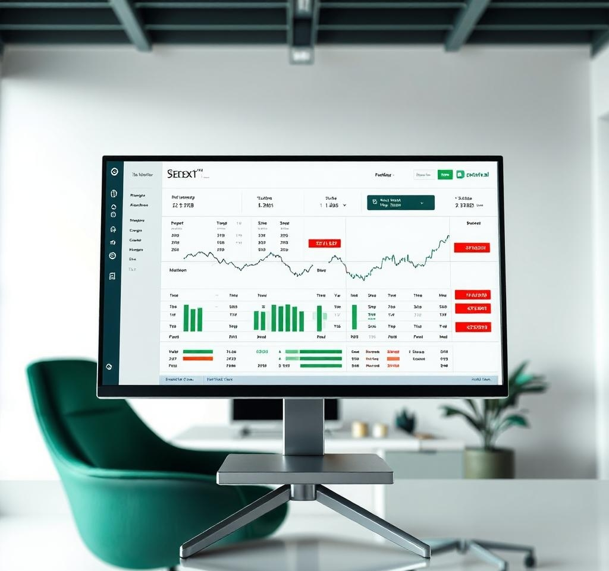

Protect Your Capital: Risk Management 101
Trading is like farming - you plant with care, protect against storms, and harvest only what you’ve nurtured. Risk management is the fence around your capital, ensuring you survive market volatility to trade another day. In this post, I’ll share my disciplined approach to risk management, honed from years of farming and trading.
1. Why Risk Management Matters
Without risk management, even the best breakout strategy can wipe out your account. Just as I protect my crops from pests and drought, you must shield your portfolio from unexpected market moves. The goal? Preserve capital so you can seize opportunities.
2. Core Principles of Risk Management
Here’s how I approach risk, inspired by the steady rhythm of farm life:
- Risk Only What You Can Afford: Never risk more than 1-2% of your account per trade. For example, on a $1000 account, limit your loss to $10-$20.
- Use Stop-Losses: Place stop-loss orders below support (for longs) or above resistance (for shorts) to cap losses automatically.
- Position Sizing: Adjust trade size based on volatility. Smaller positions for choppy markets, larger for clear breakouts.
- Diversify: Don’t put all your capital in one trade, just as I don’t plant only one crop.
3. My Risk Management Process
Here’s my step-by-step process for managing risk in breakout trading:
- Assess Your Account: Calculate your total capital and set a per-trade risk limit (e.g., 1%).
- Analyze the Setup: Identify the breakout level and set a stop-loss 1-2% below it.
- Calculate Position Size: Use a position size calculator (e.g., on TradingView) to align with your risk limit.
- Review and Adjust: After each trade, analyze what worked or didn’t, just like reviewing a harvest.
Want detailed examples? My Breakout Trading Playbook ($5) includes risk management templates. Get it now.
4. The Farming Mindset in Risk Management
Growing crops taught me to plan for setbacks (watch my journey here). A single storm can ruin a crop, just as a bad trade can hurt your account. By staying disciplined and prepared, I turned failed harvests into lessons - and losing trades into wins.
5. Take Control of Your Trading
Join my Telegram community for daily risk management tips and market insights.
Join Telegram Back to Blog